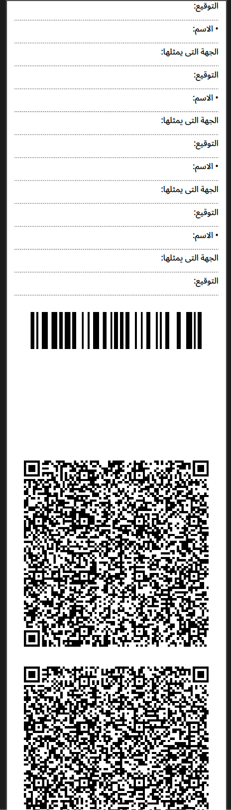
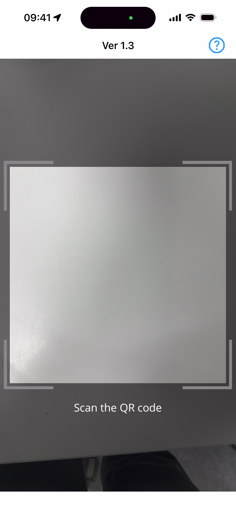
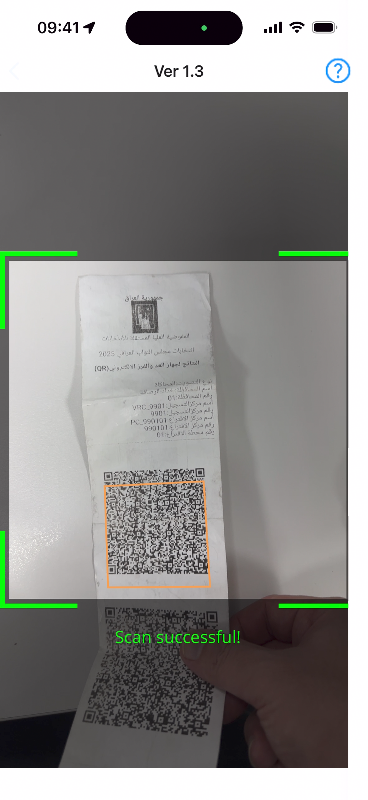
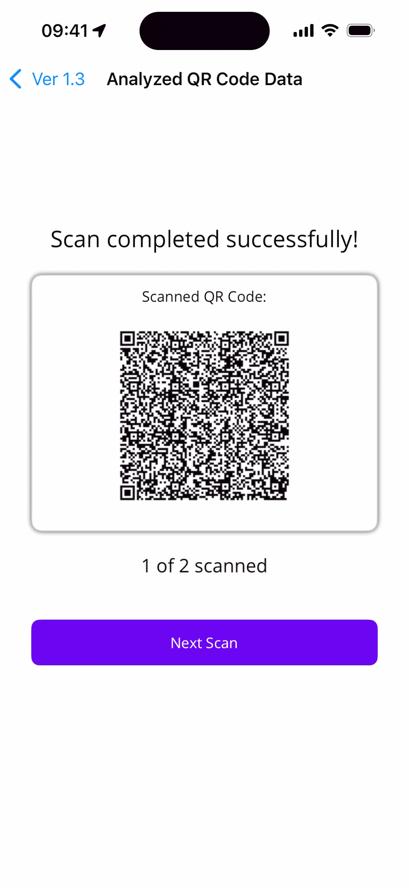
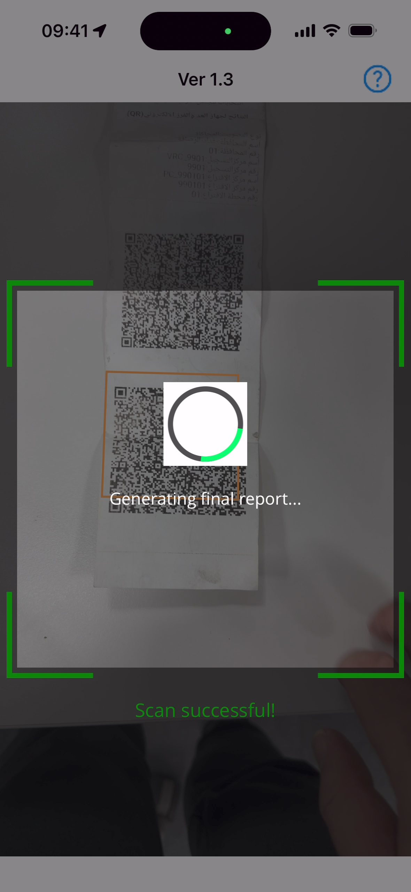
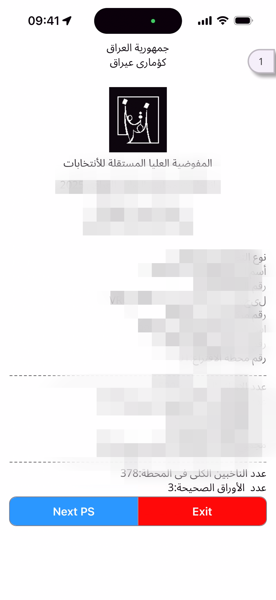
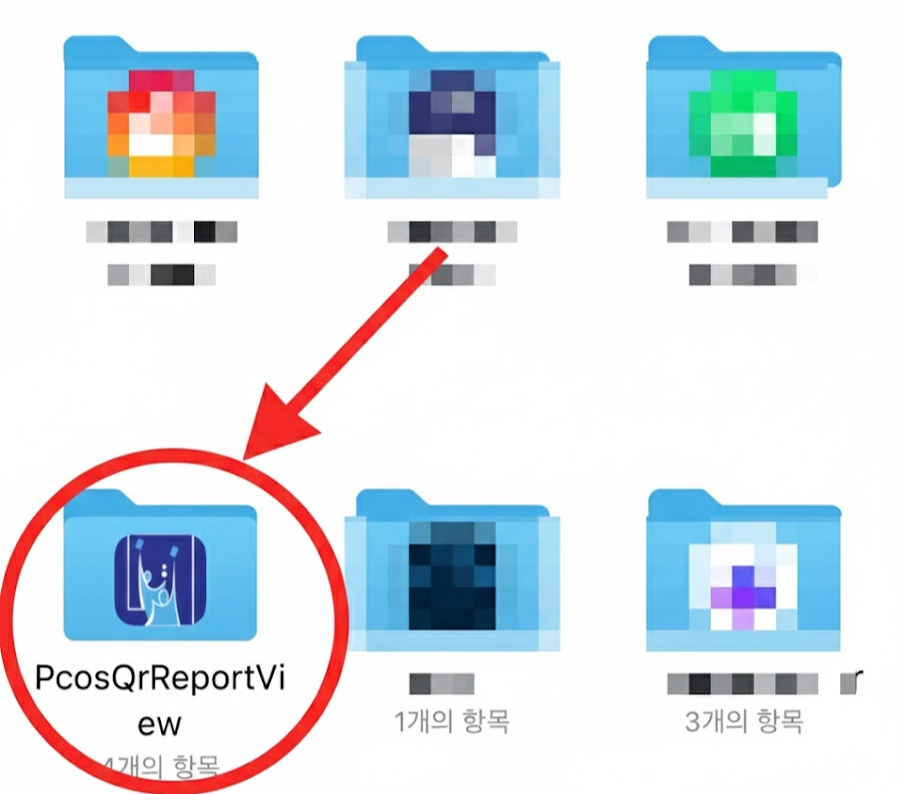

This manual provides basic instructions for using the PCOS QR Report Viewer application. This app allows you to scan QR codes containing election results, decrypt the data, and view detailed reports.
Tap the 'PcosQrGOV' app icon on your home screen to run it.
Figure 1: App Icon
Get the election results report with the printed QR codes. One report sheet contains multiple QR codes.
Figure 2: Example of QR codes on a report
Align the first QR code inside the viewfinder (square border) on the camera screen.
Tap the 'Scan QR Code' button in the center of the main screen.
Figure 3: Main Screen
When the camera activates, center the report's QR code to scan it.
Figure 4: Processing a QR Code
The app provides feedback on the scan status via the viewfinder color and bottom text.
After each successful scan, you will be taken to the 'Scan Result Summary' screen. This screen shows how many QR codes have been scanned out of the total.
Figure 5: Scan Result Summary
After the last QR code is scanned, a "Generating final report..." message will briefly appear.
Figure 6: Report Generation Step
Once complete, the unified election result report (in PDF format) will be automatically displayed on the screen.
Figure 7: Final Report View
This section explains where PDF files generated by the PcosQrReportView app are saved on Android and iPhone devices, and how to find them.
When you first create (scan) a PDF, a permission request pop-up will appear, asking, "Allow PcosQrReportView to access photos and media on your device?"
You must select 'Allow'. If you select 'Don't Allow', the PDF file will not be saved to your device.
Figure 8: Android File Access Permission
Once permission is granted, the PDF file will be saved to the device's 'Downloads' folder.
On iPhone, the PDF file is saved in the 'PcosQrReportView' folder within the 'Files' app.
Figure 9: iPhone 'Files' App Location